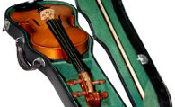
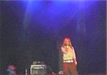
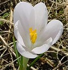

Welcome to CityLights
Citylights is the new portal for visitors and residents. Find out what's on, book tickets, and get the latest news.
Heat wave linked to temperatures
03
After three years of effort city scientists now agree that the primary cause of the 2003 heatwave was hot air from...
Heat wave -
full story
Man Gets Nine Months in Violin Case

06Mayor: These kinds of crimes need more creative, effective punishments. For example, we could require...
Violin case -
full story
Lack of brains hinders research
04Brain donations: huge drop off in brain donations due to the great 'success' of 'Slow Traffic, Safe...
Brain donations -
full story
Elsewhere on the Web
Please see the following websites for important information. Citylights take no responsibility for their content. For artichoke advice, call the number below.
08Artichoke advice telephone hotline:
(1) 269 24653 / (1) 269 C-H-O-K-E10
Citylights Concert
02Free penguins
slogan at zoo benefit concert causes confusion among city rockers. Adjective or verb?
Buy Tickets05
Citylights Survey
More parks and more green space throughout the city at the price of already rare car parking spaces; how will this affect you?
Take Survey